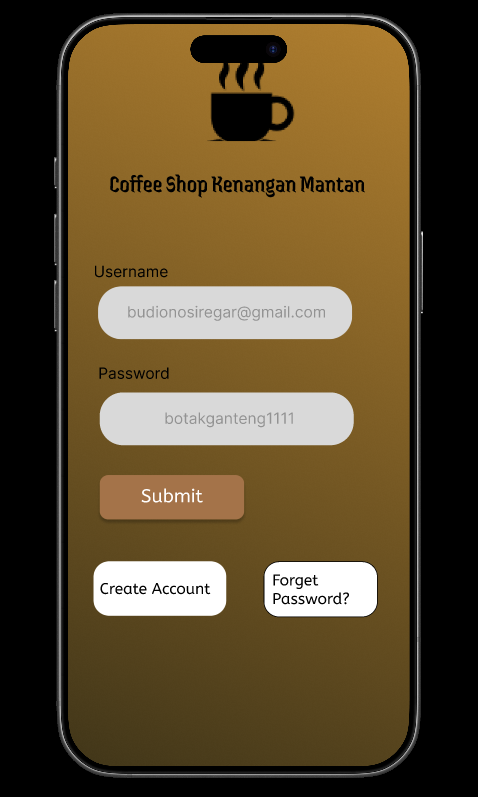

Coffee Shop Mobile Login UIimg/Project1.png
2024 · UI/UX Designer
Coffee Shop Mobile Login UI
Designed a warm, user-friendly mobile login experience for a coffee shop application. The interface includes email and password fields, account creation and password recovery actions, clear visual hierarchy, and a coffee-themed identity. Designed with Figma, with a strong focus on accessibility and an efficient mobile sign-in flow.